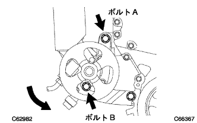

|
調整用ボルトAおよび固定用ボルトBを緩める。
Vベルトの張力を緩めてVベルトを取りはずす。
ベーン ポンプASSY 取り外し |
| 1. ファン & オルタネータVベルト取りはずし |
|
調整用ボルトAおよび固定用ボルトBを緩める。
Vベルトの張力を緩めてVベルトを取りはずす。
| 2. ベーンポンプオイルリザーバ カバー取りはずし |
| 3. パワーステアリングフルード抜き取り |
| 4. フロントタイヤRH取りはずし |
| 5. エンジンアンダ カバー RH取りはずし |
ボルト2本およびスクリュ2本をはずす。
ナットをはずし、エンジンアンダーカバーRHを取りはずす。
| 6. ベーンポンプ ステー RR取りはずし |
 |
オイルプレッシャセンサハーネスのクランプ1箇所をオイルリザーバASSYから切り離し、コネクターを切り離す。
|  |
ボルトAおよびボルトBをゆるめ、ベーンポンプASSYをエンジン側にずらし、Vベルトを切り離す。
ボルトAおよびボルトBを仮締めし、ベーンポンプASSYを固定させる。
 |
ボルトをはずし、ステーリアおよびヒートインシュレータをベーンポンプASSYから取りはずす。
| 7. プレッシャフィード チューブASSY取りはずし |
 |
ユニオンナットレンチ17を使用して、プレッシャーフィードチューブASSYを切り離す。
 |
クリップをずらし、合わせマークを付け、ホースNO.1を切り離す。
| 8. ベーン ポンプASSY取りはずし |
ボルトBおよびボルトCをはずし、アジャスティングストラットを取りはずす。
ボルトAをはずし、ベーンポンプASSYを取りはずす。